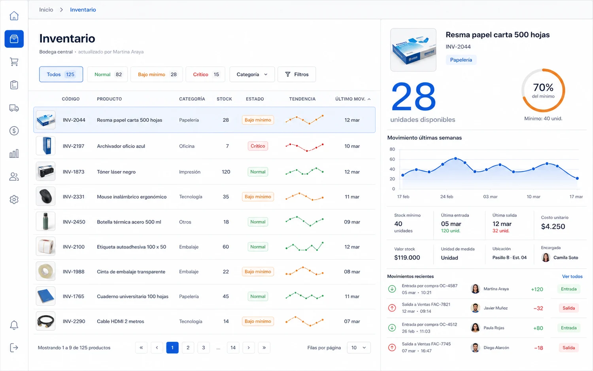
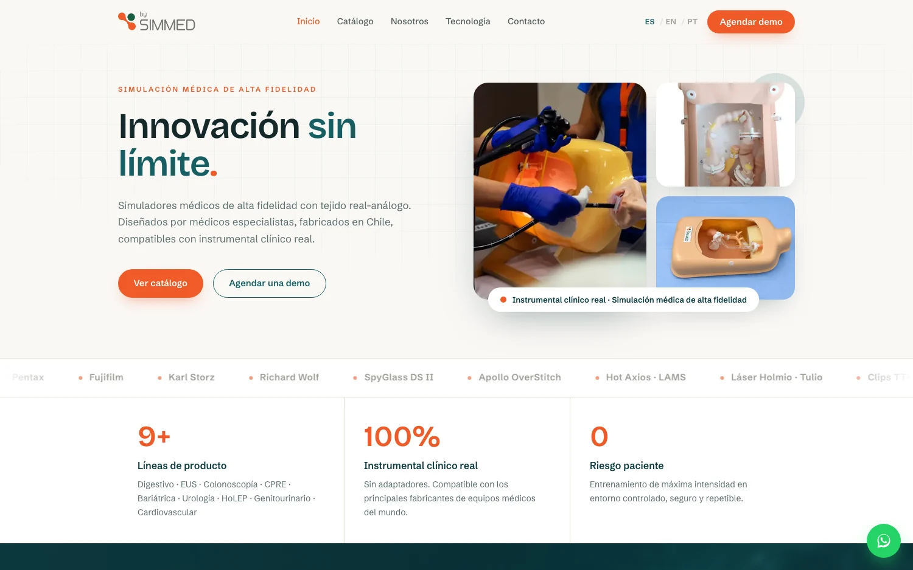
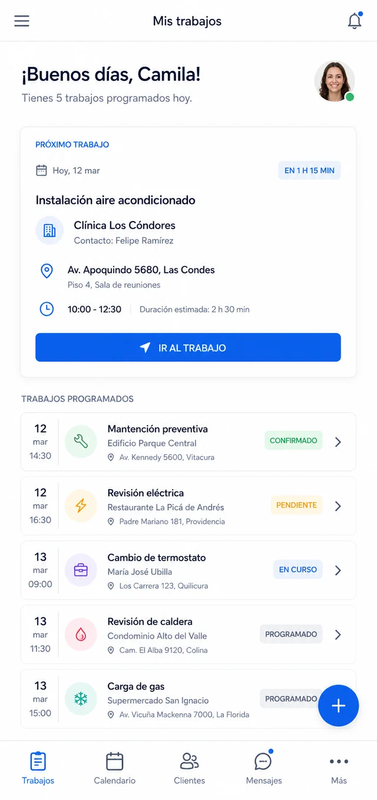
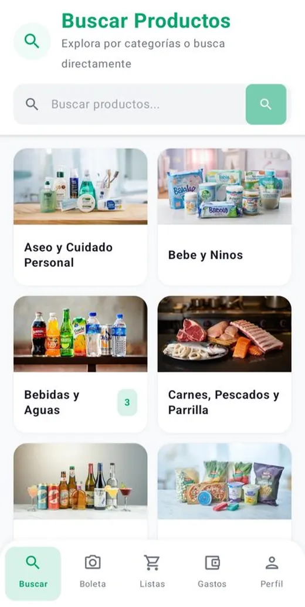
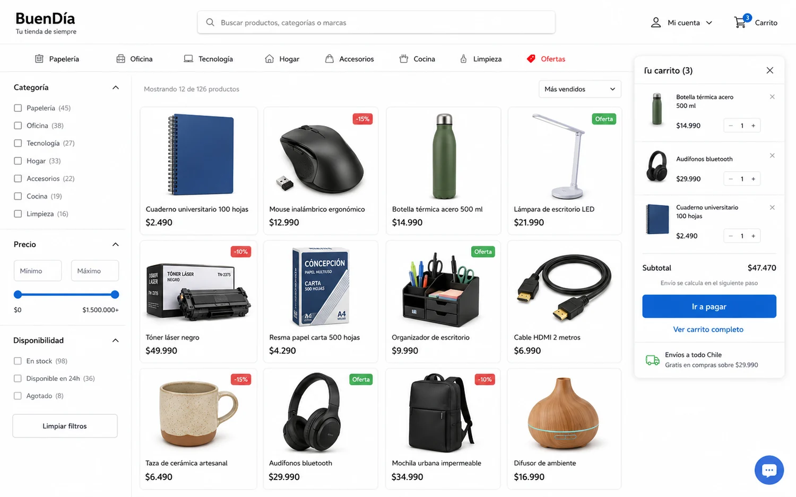
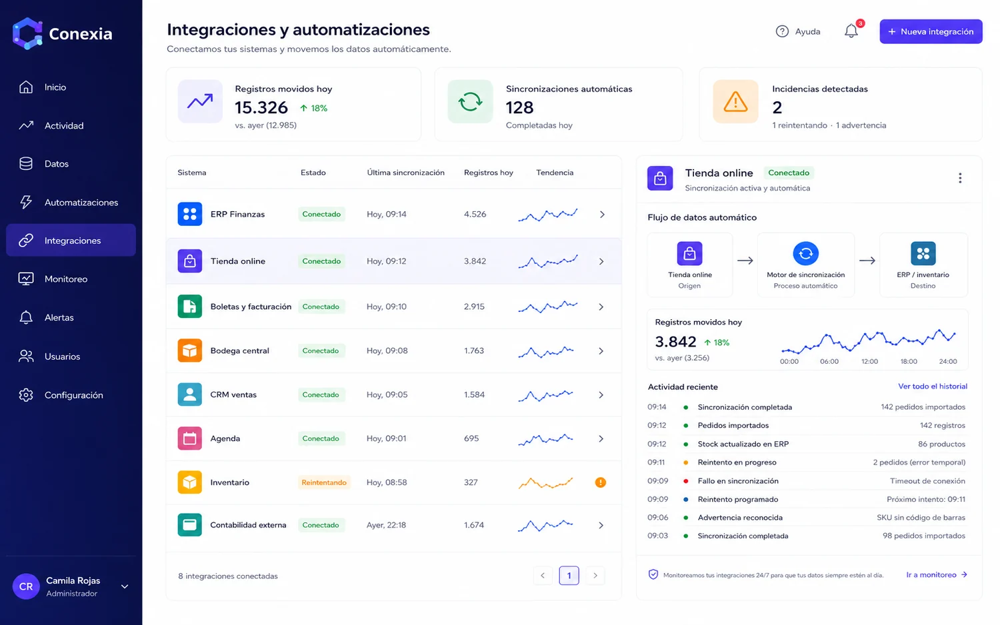
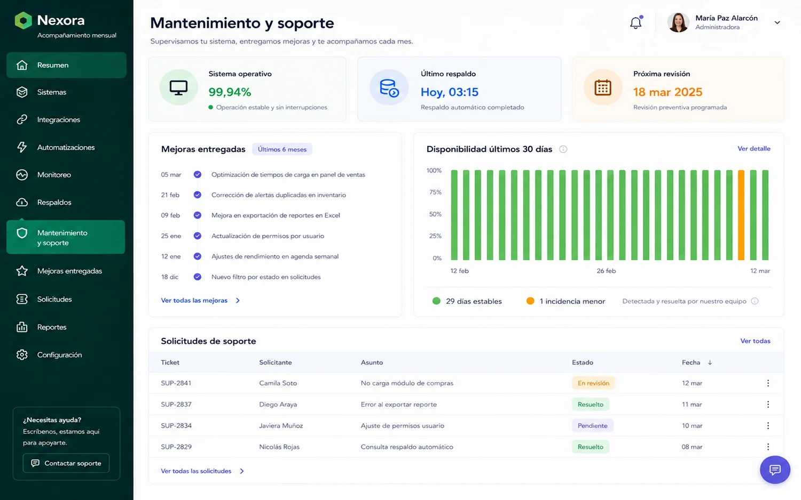

Servicios
Seis servicios, con lo que incluye cada uno, lo que no incluye y cuánto suele demorar. Sin letra chica.
Vista rápida
Elige cualquiera para ver el alcance completo: qué incluye, qué no incluye y cuánto suele demorar. Sin letra chica.

Reemplaza las planillas y ordena la operación completa en un solo lugar. Es donde más aportamos y donde el cliente nota antes la diferencia: puedes partir por un módulo y crecer desde ahí.
Plazo típico: de 3 a 6 meses. Entregamos por etapas, así el primer módulo entra en uso mucho antes de que el sistema esté completo.

Sitios corporativos, catálogos y páginas de captación. Rápidos, adaptados a celular y pensados para que el visitante haga algo.
Plazo típico: entre 3 y 6 semanas, según cuántas secciones tenga y qué tan lista esté la información.

iOS
AndroidAplicaciones para iOS y Android, publicadas en las tiendas o distribuidas internamente a tu equipo.
Plazo típico: de 2 a 4 meses hasta publicar, más el tiempo de revisión de cada tienda, que no controlamos.

Comercio electrónico cuando una plataforma estándar no alcanza: catálogos complejos, precios por cliente o reglas propias de despacho.
Plazo típico: de 6 a 12 semanas. Si tu catálogo es simple, muchas veces te conviene más una plataforma estándar, y te lo diremos.

Conectar sistemas que hoy no se hablan, para eliminar el trabajo de copiar datos de un lado a otro.
Plazo típico: de 2 a 5 semanas por integración, dependiendo de qué tan documentado esté el otro sistema.

Va en todo lo que entregamos, y se cobra aparte de la puesta en marcha: 1 UF al mes, o 1,5 UF si es tienda online o app. Es lo que separa un sistema que sigue sirviendo de uno que quedó congelado el día de la entrega.
Cómo funciona: se cobra a partir de la entrega, mes a mes y sin permanencia. El valor se revisa una vez al año, cuando tu operación es más grande que la que dejamos andando; entremedio no cambia, y si el número nuevo no te convence te vas ese mismo mes. Es el corazón de cómo trabajamos: preferimos cobrar poco al empezar y responder por el sistema todos los meses, antes que cobrar caro una vez y desaparecer.
Lo que no verás acáSi tu problema se resuelve con una herramienta que ya existe y cuesta una fracción de lo que costaría desarrollarla, te lo vamos a decir en la primera reunión, aunque signifique perder el proyecto.
Preferimos un cliente que vuelve en dos años a un proyecto que no debimos haber tomado.
Siguiente paso
Si ninguno calza del todo, escríbenos igual. La mayoría de los proyectos empieza con alguien que no sabía en qué categoría entraba.